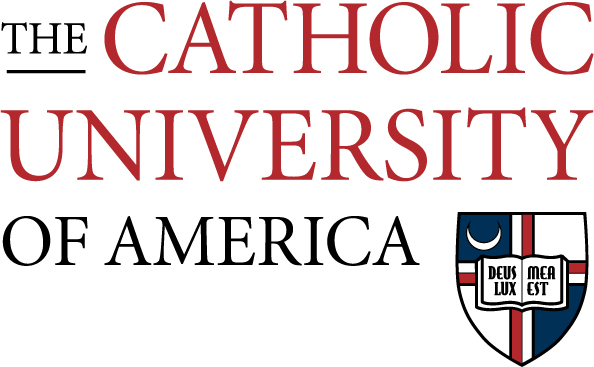

LSC650 HTML and CSS Exercise

This is a CUA Logo. |
About This Webpage |
| About the course |
This course is designed for students interested in developing skills for web site and web page design. It will cover search engine architecture, evaluation of information resources and applications of information architecture to web site design. Through exercises, discussions, lectures, projects and presentations students will learn the principles of information architecture and user-centered web design. In addition, students will have hands-on practices with web site and web page design with HTML, CSS and JavaScript. They will use HTML editors and graphic tools. |
| About this exercise |
Create lists, tables, images, links with HTML5, and Add styles with CSS |
|---|
About LIS
Table of Contents
- Mission
- How we achieve our mission
- History of CUA LIS program
- Courses of Study
Mission of CUA LIS
Mission
Through teaching, research, and service, the Department contributes to the creation and management of knowledge and information, preserves heritage and scholarship, and demonstrates our commitment to the common good. The Department of Information Sciences produces information professionals imbued with the values of the library and information science profession, and the Department’s values of collaboration, community, innovation, and excellence. In accord with the mission of The Catholic University of America, the Department advances the dialogue between faith and reason and cultivates a commitment to service in the field of library and information science.
We Achieve Our Mission By
- Educating highly competent, ethical librarians and other information professionals.
- Exploring and integrating innovative technology to enrich teaching, foster scholarship and advance professional practice.
- Strengthening the program by engaging in ongoing dialogue to anticipate the changing needs of individuals, the community and global society.
- Advancing the frontiers of knowledge and practice in library and information science.
- Serving the field, the community, the region and the world.
back to top
History of CUA LIS program
On July 2, 1911, the first Library classes were taught by members of the University Library Staff and librarians from the District of Columbia Public Library so that by 1930, a complete four-summer training program was offered and a certificate awarded. Elizabeth Stone, former department chair, later became American Library Association president and designed the America’s Libraries Postage Stamp.
A Century of Knowledge, Service, and Discovery: Library Education 1911-2011 reflected on the profession and its accomplishments across the century and laid the groundwork for its direction in the next 100 years.
back to top
Courses of Study
The program offered by the Department of Information Sciences is structured around a foundation of four core courses. Students do not formally declare majors; they may choose to concentrate their studies in a pre-designed course of study or work with their faculty advisor to develop their own course of study.
The School Library Media Certification has very specific requirements which must be fulfilled by the student through their coursework in order to receive the state-issued certificate needed to work as a School Library Media Specialist in public school libraries.
- Community Services Librarianship: Within the Community Services course of study, students can concentrate on any of the following information environments. For ease of reference, specialized recommended courses are listed for each of the three types of information environment. In addition, students interested in community archives should consult the Cultural Heritage Information Management Course of Study for additional relevant courses
Public Libraries
Academic Libraries
Specialized Libraries
- Cultural Heritage Information Management: The Cultural Heritage Information Management (CHIM) course of study is designed to prepare students for careers in managing primary source materials in libraries' special collections, archives, and museums (AKA memory institutions). The CHIM course of study supports traditional and emerging practices of managing unique hidden collections and born-digital resources for preservation and greater access to the collections in today's digital information environment.
- Data Science: This course of study prepares students for careers in all these domains as data analysts, data engineers, and data journalists. In addition, students could consider taking courses from this course of study to combine with other courses of study such as Cultural Heritage Information Management and Information Organization to become data managers, data librarians, data archivists, data curators and research data librarians.
- Digital Libraries: The Digital Libraries course of study is designed to guide students in developing specialized knowledge and skills in information technologies, information organization, and end-user services that will enable them to lead digital collection/library development and management at academic/research institutions, cultural heritage institutions, special collections/archives, and other information centers.
- Generalist: The Generalist Course of Study guides those students in the selection of a balanced program in the six competency areas defined by the faculty: Professional Identity, Management, Resources, Services, Information Organization, and Technology (see The Professional Competencies for Graduates of the Masters in Library Science Degree Program).
- Information Architecture: Information architecture (IA) draws on many fields, including library science, computer science, social informatics, information design, visual design, and engineering psychology (Rosenfeld, Morville, & Arango, 2015). The IA Course of Study reflects this diversity. The Department of and Information Science offers a variety of courses that focus on information architecture.
- Law Librarianship: Law librarianship program combines an emphasis on legal information sources and services and law library management with a general preparation for professional librarianship.
- Organization of Information: This course of study is designed to guide students to develop specialized knowledge and skills related to the organization of information objects in all formats and obtain hands-on practices in metadata standards, database management, and the management of physical and digital information resources.
- School Library Media: SLM program resides in the Library and Information Science (LIS) program, accredited by the American Library Association (ALA). The program is also state approved by the District of Columbia Office of the State Superintendent of Education (OSSE). Those who have completed the SLM program are eligible for a license/endorsement in DC and — through a reciprocity agreement — in other states and jurisdictions including Virginia and Maryland.
back to top
The LIS Faculty have adopted a statement of Professional Competencies for Graduates of the Master in Library Science Degree Program.